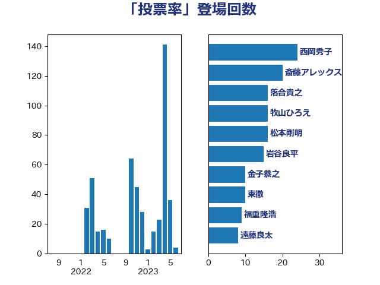

単語「投票率」

| 西岡秀子 | 国民民主党 | 24 回 |
| 斎藤アレックス | 国民民主党 | 20 回 |
| 落合貴之 | 立憲民主党 | 16 回 |
| 牧山ひろえ | 立憲民主党 | 16 回 |
| 松本剛明 | 自由民主党 | 16 回 |
| 岩谷良平 | 日本維新の会 | 15 回 |
| 金子恭之 | 自由民主党 | 10 回 |
| 東徹 | 日本維新の会 | 10 回 |
| 福重隆浩 | 公明党 | 9 回 |
| 遠藤良太 | 日本維新の会 | 8 回 |
| 赤嶺政賢 | 日本共産党 | 8 回 |
| 進藤金日子 | 自由民主党 | 7 回 |
| 片山大介 | 日本維新の会 | 7 回 |
| 湯原俊二 | 立憲民主党 | 7 回 |
| 杉本和巳 | 日本維新の会 | 7 回 |
| 平沼正二郎 | 自由民主党 | 6 回 |
| 市村浩一郎 | 日本維新の会 | 6 回 |
| 寺田稔 | 自由民主党 | 6 回 |
| 宮口治子 | 立憲民主党 | 6 回 |
| 竹詰仁 | 国民民主党 | 5 回 |
| 渡辺周 | 立憲民主党 | 5 回 |
| 平木大作 | 公明党 | 5 回 |
| 山本博司 | 公明党 | 5 回 |
| 中司宏 | 日本維新の会 | 5 回 |
| 高木啓 | 自由民主党 | 4 回 |
| 輿水恵一 | 公明党 | 4 回 |
| 田名部匡代 | 立憲民主党 | 4 回 |
| 後藤祐一 | 立憲民主党 | 4 回 |
| 岡田直樹 | 自由民主党 | 4 回 |
| 山本剛正 | 日本維新の会 | 4 回 |
| 小林一大 | 自由民主党 | 4 回 |
| 寺田学 | 立憲民主党 | 4 回 |
| 安江伸夫 | 公明党 | 4 回 |
| 冨樫博之 | 自由民主党 | 4 回 |
| 佐々木さやか | 公明党 | 4 回 |
| 三木圭恵 | 日本維新の会 | 4 回 |
| 近藤昭一 | 立憲民主党 | 3 回 |
| 西田実仁 | 公明党 | 3 回 |
| 浅尾慶一郎 | 自由民主党 | 3 回 |
| 永岡桂子 | 自由民主党 | 3 回 |
| 斎藤洋明 | 自由民主党 | 3 回 |
| 岸田文雄 | 自由民主党 | 3 回 |
| 山本順三 | 自由民主党 | 3 回 |
| 吉田とも代 | 日本維新の会 | 3 回 |
| 伊藤渉 | 公明党 | 3 回 |
| 中西祐介 | 自由民主党 | 3 回 |
| 重徳和彦 | 立憲民主党 | 2 回 |
| 谷田川元 | 立憲民主党 | 2 回 |
| 舟山康江 | 国民民主党 | 2 回 |
| 石井準一 | 自由民主党 | 2 回 |
| 片山さつき | 自由民主党 | 2 回 |
| 浦野靖人 | 日本維新の会 | 2 回 |
| 浜田聡 | NHK党 | 2 回 |
| 橘慶一郎 | 自由民主党 | 2 回 |
| 森山浩行 | 立憲民主党 | 2 回 |
| 杉尾秀哉 | 立憲民主党 | 2 回 |
| 小沢雅仁 | 立憲民主党 | 2 回 |
| 伊藤孝恵 | 国民民主党 | 2 回 |
| 青柳仁士 | 日本維新の会 | 1 回 |
| 長谷川淳二 | 自由民主党 | 1 回 |
| 鈴木憲和 | 自由民主党 | 1 回 |
| 船田元 | 自由民主党 | 1 回 |
| 臼井正一 | 自由民主党 | 1 回 |
| 秋葉賢也 | 自由民主党 | 1 回 |
| 福田昭夫 | 立憲民主党 | 1 回 |
| 神谷宗幣 | 参政党 | 1 回 |
| 礒崎哲史 | 国民民主党 | 1 回 |
| 石川香織 | 立憲民主党 | 1 回 |
| 石井章 | 日本維新の会 | 1 回 |
| 矢倉克夫 | 公明党 | 1 回 |
| 田野瀬太道 | 無所属 | 1 回 |
| 源馬謙太郎 | 立憲民主党 | 1 回 |
| 浮島智子 | 公明党 | 1 回 |
| 河西宏一 | 公明党 | 1 回 |
| 沢田良 | 日本維新の会 | 1 回 |
| 水岡俊一 | 立憲民主党 | 1 回 |
| 櫻井周 | 立憲民主党 | 1 回 |
| 森本真治 | 立憲民主党 | 1 回 |
| 梅村みずほ | 日本維新の会 | 1 回 |
| 松下新平 | 自由民主党 | 1 回 |
| 有村治子 | 自由民主党 | 1 回 |
| 新垣邦男 | 立憲民主党 | 1 回 |
| 徳永久志 | 無所属 | 1 回 |
| 山本太郎 | れいわ新選組 | 1 回 |
| 小西洋之 | 立憲民主党 | 1 回 |
| 奥野総一郎 | 立憲民主党 | 1 回 |
| 大石あきこ | れいわ新選組 | 1 回 |
| 嘉田由紀子 | 無所属 | 1 回 |
| 古川直季 | 自由民主党 | 1 回 |
| 仁比聡平 | 日本共産党 | 1 回 |
| 串田誠一 | 日本維新の会 | 1 回 |
| 中谷真一 | 自由民主党 | 1 回 |
| 上月良祐 | 自由民主党 | 1 回 |
| おおつき紅葉 | 立憲民主党 | 1 回 |
| あかま二郎 | 自由民主党 | 1 回 |